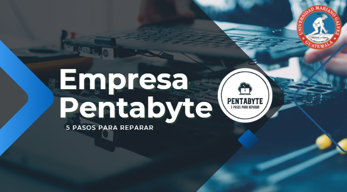
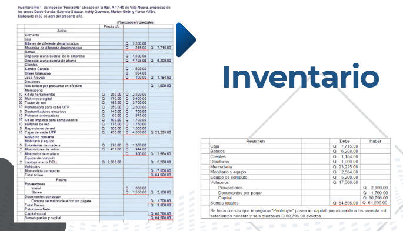
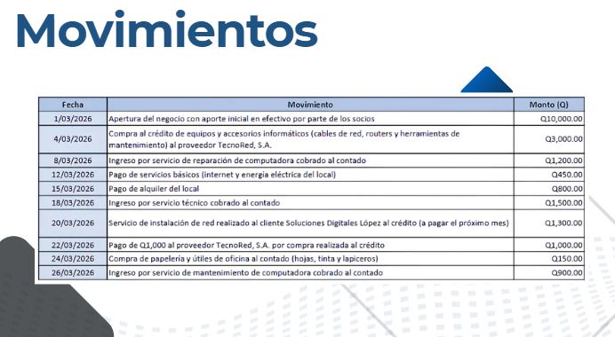

En este proyecto se desarrolló la simulación de una empresa o negocio, aplicando principios básicos de contabilidad y administración. Se trabajó en la organización de ingresos, gastos y estructura financiera, permitiendo comprender cómo se gestiona económicamente una empresa. Este ejercicio ayuda a fortalecer la toma de decisiones y el análisis financiero en un entorno real.


